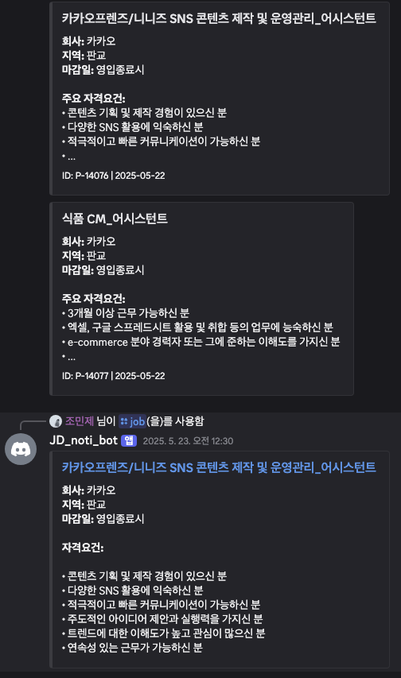

I’m Minjae Cho, a developer who embraces growth and challenges. My
goal is to use technology to make people’s lives more convenient.
Goals/Vision
I strive to become a developer who solves problems efficiently
through diverse tech stacks and project experiences, always prioritizing
user experience.
üéì Education
Incheon National University, Bachelor of Computer
Science, Expected Graduation: August 2024
Reinforcement
Learning–based Super Mario Bros Training (MadMario)
- Description: Trained an agent to play Super Mario
Bros using PPO and parallel environments.
- Key Details:
- Used stable-baselines3 PPO with up to 8 parallel
SubprocVecEnv instances
- Optimized for Mac MPS (Metal Performance Shaders)
- Resolved Gym/Gymnasium API compatibility for stable VecEnv
training
- Tech Stack: Python, Stable-Baselines3, Gymnasium,
PyTorch
Malicious URL Detection
(DACON)
Description: Developed a phishing URL detection
model for the DACON competition by preprocessing and analyzing ~180,000
URLs.
Key Contributions: Engineered domain-based and
character n-gram features; fused BERT embeddings with a CNN + XGBoost
ensemble.
- Description: Built a Discord chat-assistant bot
powered by a local LLM (Gemma3).
- Key Features: Performs web scraping on user queries
and uses RAG (Retrieval-Augmented Generation) for informed
responses.
- Tech Stack: Python, discord.py, LangChain, Docker,
Llama.cpp
- Deployment: Packaged as a Docker container and hosted
on GitHub for continuous availability
Pathmaker Destination
Recommendation App
- Description: Travel destination recommendation
service combining Flutter frontend and FastAPI backend.
- Key Contributions: Designed PostgreSQL schema;
implemented RESTful APIs; integrated Google Places API; developed
user-preference recommendation algorithm.
- Recommendation Algorithm: Computes weighted
similarity scores based on distance, ratings, and category weight.
- Tech Stack: Flutter (Dart), FastAPI, PostgreSQL,
SQLAlchemy, Google Maps & Places API
Automated
YouTube Shorts Generation using Runpod
Description: Developed a fully automated workflow
system that generates short-form video content based on scripts using
RunPod’s Stable Diffusion 3. The system handles everything from image
generation and TTS voice-over to video editing and saving.
Key Features:
Automated script generation via Local LLM: Randomly selects a topic
from a user-defined list → Calls Local LLM API → Outputs script.
Image generation using RunPod SD3 API: Converts the generated script
into image prompts to create visuals with SD3.
Dia 1.6b TTS for voice-over: Processes the script content with TTS
to create narration audio.
Video synthesis and text overlay with FFmpeg: Combines SD3 images +
TTS audio → Automated video creation (1080x1920, including text).
Tech Stack: Runpod (Stable Diffusion 3), Local LLM,
Dia 1.6b TTS, FFmpeg
AI-Powered
Job Posting Collection & RAG Analysis System

careers_discord_bot_example
Description: An intelligent system that
automatically collects job postings from major Korean IT companies and
utilizes RAG (Retrieval-Augmented Generation) technology to
intelligently search and recommend job information tailored to
user-defined criteria.
Key Features:
Real-time monitoring and automated information gathering from 10+
company career sites.